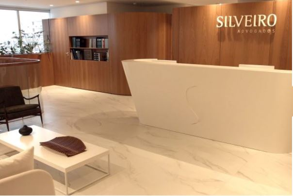

12
JUL
2018
Apresentação da nova sede de Porto Alegre e vídeo que celebra nossa trajetória
Silveiro Advogados está maior e mais moderno, mantendo intactos sua missão e seus valores. A Nova Sede de Porto Alegre representa muito mais do que a mudança de endereço. É uma nova fase dessa trajetória de mais de 60 anos! Assista abaixo nosso vídeo institucional e a seguir a apresentação de nossa nova estrutura em […]